ARCHIVE
계단실 층간조인트의 노출콘크리트 면보수
계단실 벽체의 층간조인트를 따라 남은 불규칙한 경계선과 흘러내린 자국을 노출콘크리트 면보수로 정리한 사례. 시공 전 9장·시공 후 7장의 현장 사진으로 전후 상태를 비교할 수 있다.
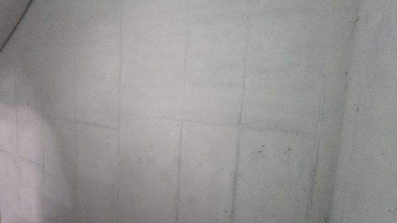
시공 대상 및 현장 조건
• 대상은 계단실 벽체의 노출콘크리트 면이며, 그중 위아래 벽체가 이어지는 층간조인트 부위입니다. (원본 제목)
• 사진으로 확인되는 현장은 계단과 계단참이 함께 보이는 실내 계단실입니다. 벽체에는 격자형 거푸집 판 줄눈과 타이 자리가 남아 있습니다.
• 시공 전 사진에는 목재 자재, 전기 박스, 인입 배선이 보여 내부 마감 전 단계의 현장으로 보입니다.
• 현장 위치, 건물 용도, 보수 면적은 원본에 기록되어 있지 않습니다.
시공 전 노출콘크리트 상태
• 벽체를 가로지르는 층간조인트 경계선이 곧지 않고 들쭉날쭉합니다. 일부 구간은 경계를 따라 표면이 떨어져 나가 홈처럼 패여 있습니다. (시공 전 1·2·4)
• 조인트 바로 아래로 회색 자국이 세로로 길게 흘러내린 흔적이 여러 벽면에 반복됩니다. (시공 전 1·2·3·8) 한 벽면은 흰색 흘러내림 자국이 넓게 퍼져 있습니다. (시공 전 6)
• 조인트 주변으로 표면이 거칠고 구멍이 많은 부위가 있고 (시공 전 4·7), 누런 얼룩도 보입니다. (시공 전 7)
• 벽체 위쪽 모서리에는 표면이 넓게 거친 요철 상태로 드러난 부위가 있습니다. (시공 전 9) 이 부위의 원인과 처리 방법은 원본에 기록되어 있지 않습니다.
• 판 줄눈 주변의 작은 기포 구멍, 가로로 그어진 검은 선 자국도 함께 보입니다. (시공 전 3·8)
• 구분: 위 항목은 모두 표면에서 보이는 미관상의 결함입니다. 조인트를 통한 누수, 조인트를 관통하는 균열, 이음부의 들뜸 같은 구조·방수 측면의 상태는 사진과 원본으로 확인할 수 없습니다.
보수 작업 내용
• 이 사례의 작업은 원본에 '노출콘크리트 면보수'로 기록되어 있습니다.
• 사용 자재, 배합, 공정 순서, 작업 기간은 원본에 남아 있지 않아 이 페이지에 적지 않습니다. 시공 중 사진도 없습니다.
• 시공 전·후 사진을 비교하면, 조인트 경계선과 흘러내림 자국이 있던 벽면이 정리되었고 거푸집 판 줄눈은 지우지 않고 남겨 두었습니다.
시공 후 마감 상태
• 층간조인트의 불규칙한 경계선과 그 아래 흘러내림 자국이 보이지 않습니다. (시공 후 1~7)
• 벽면 전체가 밝은 회색 톤으로 고르게 정리되어, 시공 전의 얼룩과 변색 구간이 드러나지 않습니다.
• 거푸집 판 줄눈과 작은 기포 자국 같은 노출콘크리트 표면 요소는 남아 있습니다. (시공 후 1·3·4·5)
• 콘센트 박스 등 설비 개구부는 그대로 남아 있습니다. (시공 후 1·2·3·5·6·7)
• 시공 후 사진은 작업등 조명 아래에서 찍어 실제 색감과 차이가 있을 수 있으며, 전·후 사진을 같은 위치끼리 일대일로 맞춰 찍지는 않았습니다.
기술적 고려사항
• 이 절은 층간조인트 보수에 관한 일반적인 기술 설명이며, 이 현장의 작업 기록이 아닙니다.
• 층간조인트는 아래 벽체를 타설한 뒤 위 벽체를 이어 타설하는 경계(시공 이음)입니다. 거푸집 이음부 틈으로 시멘트 페이스트가 새어 나와 아래 벽면을 따라 흘러내리거나, 경계선이 고르지 않게 남기 쉬운 부위입니다.
• 경계선 불규칙, 흘러내림 자국, 얼룩, 표면 결손은 미관 문제로 면보수로 표면을 정리하는 대상입니다. 반면 누수, 관통 균열, 이음부 들뜸 같은 구조·방수 문제는 표면 마감만으로 해결되지 않으므로, 이런 증상이 있으면 원인 처리를 먼저 검토한 뒤 면보수를 하는 것이 일반적인 순서입니다.
• 노출콘크리트 면보수에서는 보수한 자리가 주변 면과 따로 보이지 않도록 색조와 질감을 맞추고, 거푸집 판 줄눈처럼 원래 표면 요소를 살릴지 함께 판단합니다.
BEFORE시공 전
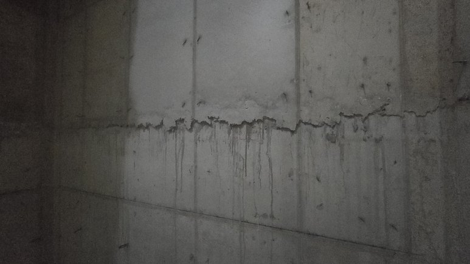
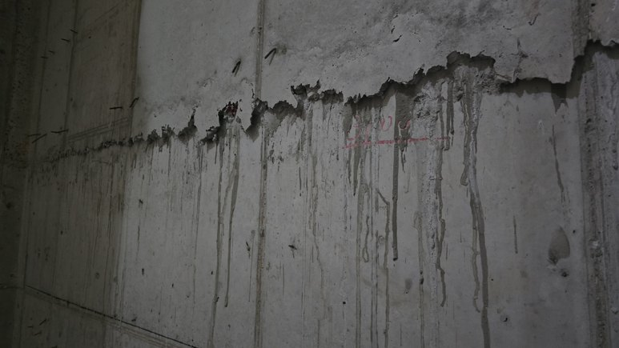
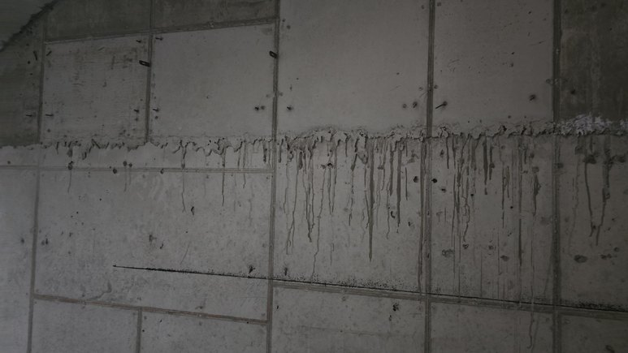
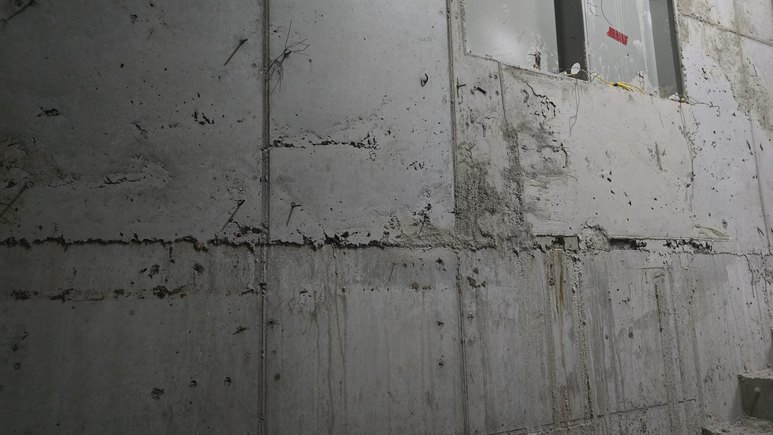
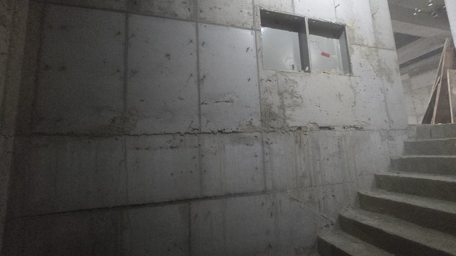
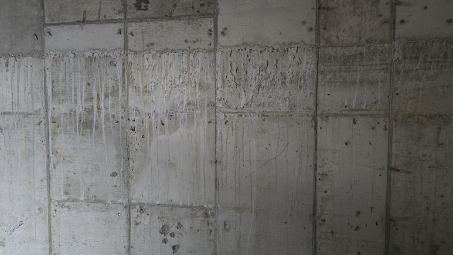
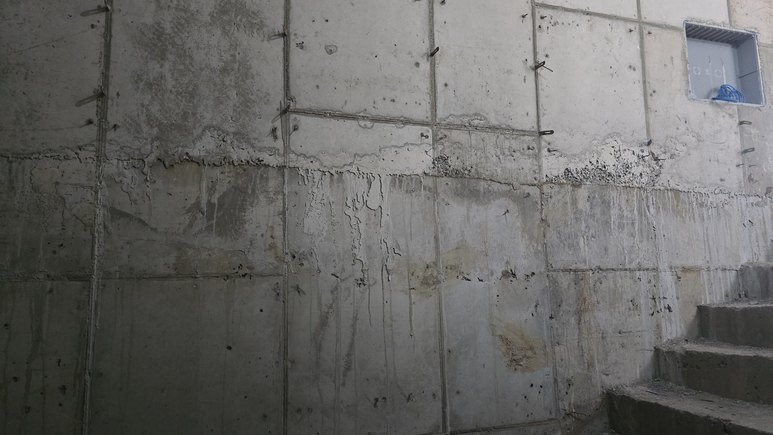
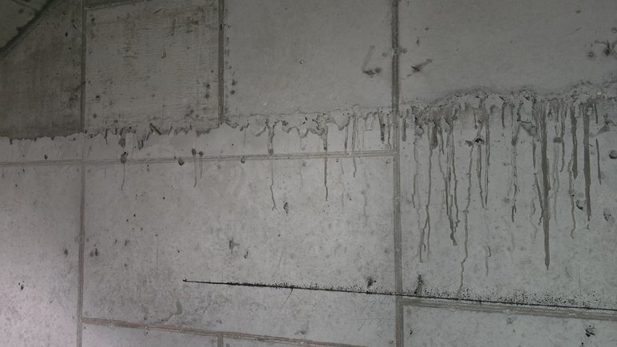
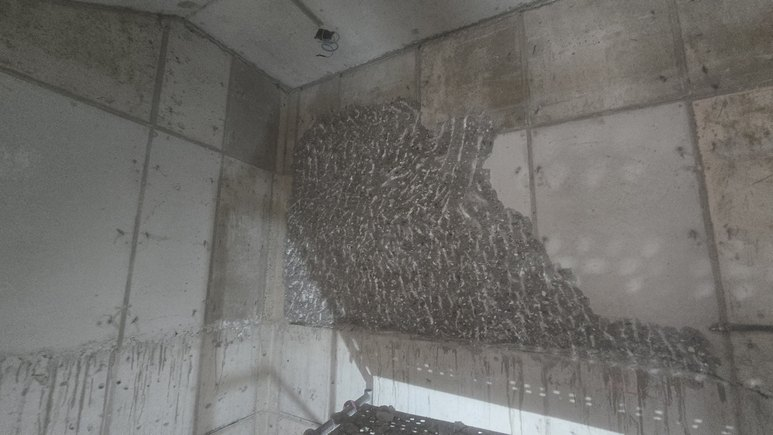
AFTER시공 후
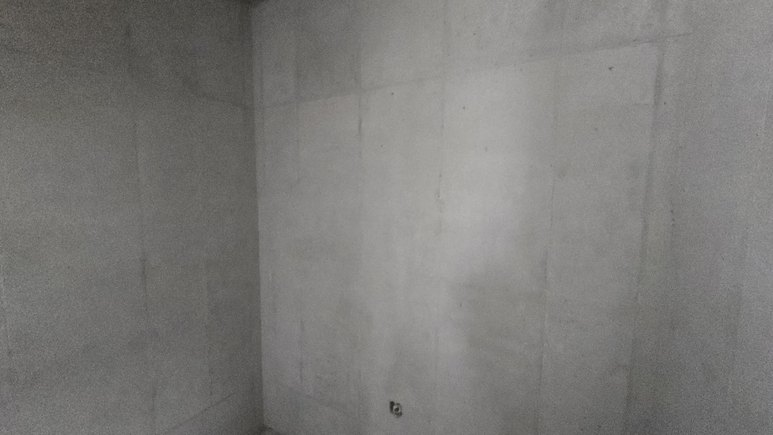
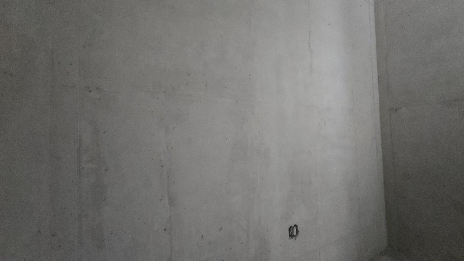
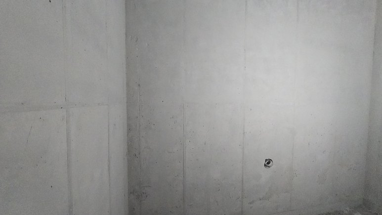

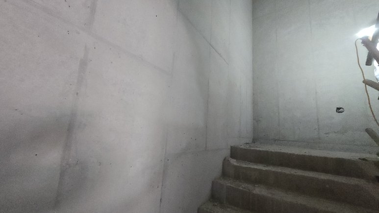
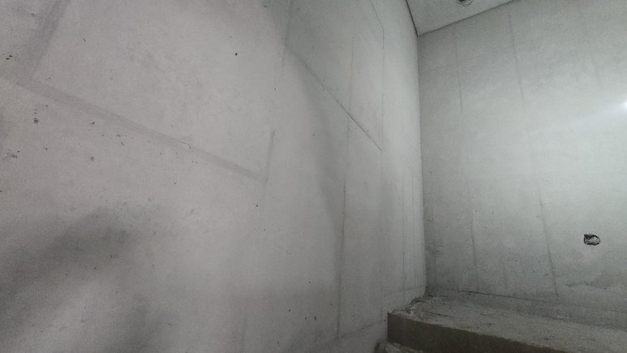
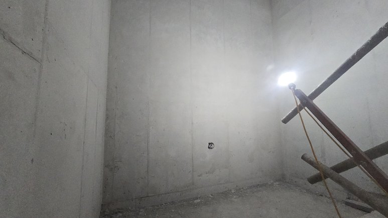